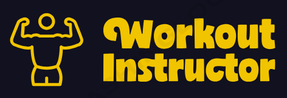
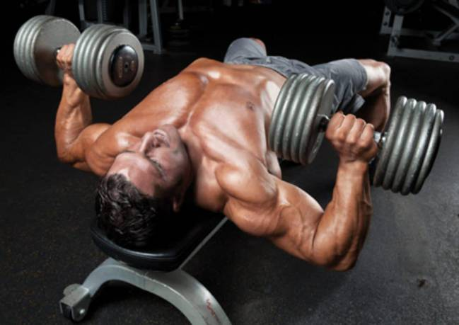
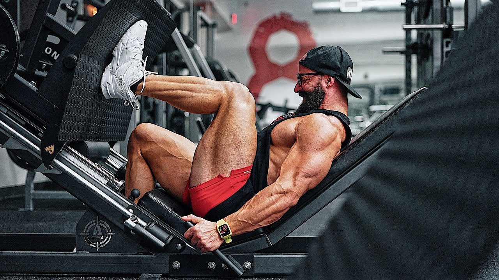
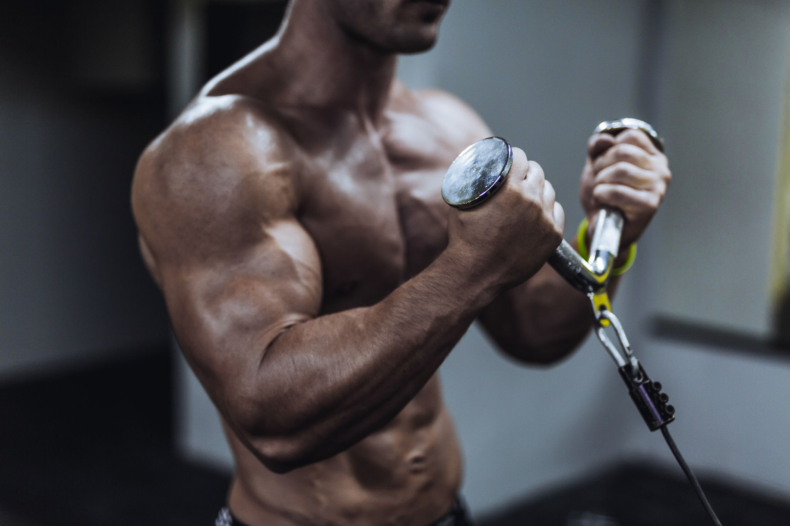

Aprende Rutinas de Gimnasio


Rutina Pecho

Rutina Pierna
Rutina Espalda

Rutina Brazos
Cardio
Rutina de Pecho
Press de Banco - 4 series x 8-10 repeticiones
Press de Banco Inclinado - 3 series x 10-12 repeticiones
Aperturas con Mancuernas - 3 series x 12-15 repeticiones
Flexiones - 2 series x máximo de repeticiones (hasta el fallo muscular)
Rutina de Pierna
Sentadillas- 4 series x 8-10 repeticiones - Descanso: 60-90 segundos
Prensa de Piernas - 3 series x 10-12 repeticiones - Descanso: 60-90 segundos
Extensiones de Cuádriceps - 3 series x 12-15 repeticiones - Descanso: 45-60 segundos
<
Rutina de Espalda
Dominadas o Pull-Ups - 4 series x 6-8 repeticiones - Descanso: 60-90 segundos
Remo con Barra T - 3 series x 8-10 repeticiones - Descanso: 60-90 segundos
Pulldown en Polea Alta - 3 series x 10-12 repeticiones - Descanso: 45-60 segundos
Rutina de Brazos
Curl de Bíceps con Barra - 4 series x 8-10 repeticiones - Descanso: 60-75 segundos
Curl de Martillo con Mancuernas - 3 series x 10-12 repeticiones - Descanso: 45-60 segundos
Extensiones de Tríceps en Polea Alta - 4 series x 10-12 repeticiones - Descanso: 60-75 segundos
Rutina de Cardio
Calentamiento - Camina a una velocidad moderada durante 5-10 minutos para elevar gradualmente tu ritmo cardíaco.
Carrera Moderada - Corre a un ritmo constante y moderado durante 10 minutos. Velocidad: 8-10 km/h
Carrera Moderada - Corre a un ritmo constante y moderado durante 5-10 minutos. Velocidad: 8-10 km/h